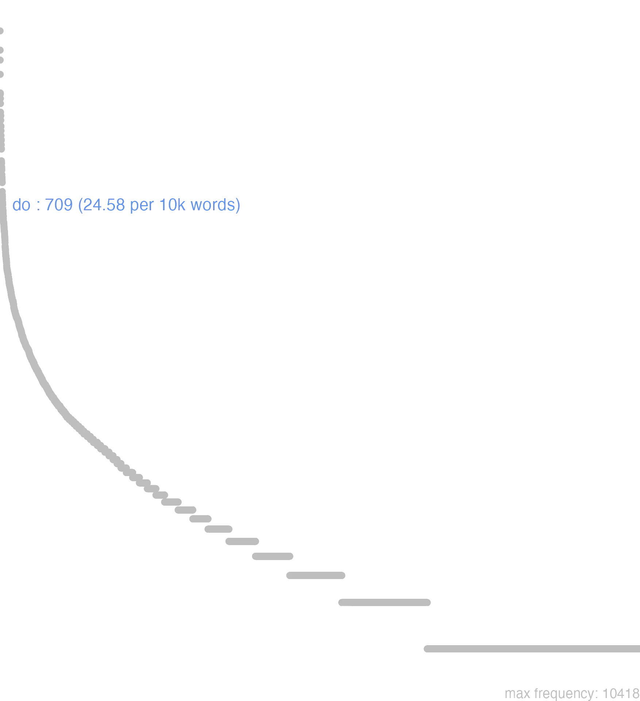

43 do
43.0.0.1 bases lexicais
id: http://lila-erc.eu/data/id/lemma/99970
classe: verbo
paradigma: 1ª conjugação (tema em -ā-)
outras grafias:
variantes do lema:
do presente | indicativo | 1ª pessoa singular | voz ativa
dare presente | infinitivo | ativo
dabit futuro | indicativo | 3ª pessoa singular | voz ativa
dedi pretérito perfeito | indicativo | 1ª pessoa singular | voz ativa
datum particípio passado | nominativo neutro singular
daturum particípio futuro | nominativo neutro singular
dĕdī
dā
dō
dās
dăre
dătum
43.0.0.2 dicionários tradicionais
dā
imperat. de dare:
forma sincopada = dabisne Plaut. Bac. 883
v. do. dan
forma sincopada = dasne Plaut. As. 671
v. do. danunt
= dant.
v. do. datin
forma sincopada = datisne Plaut. Curc. 311
v. do. dedistin
forma sincopada = dedistine Plaut. Curc. 345
v. do. dō -ās -āre dĕdī, dātum
v. tr.
imperat. de dare:
1 Dize, vejamos Verg. Buc. 1, 18.
dabinforma sincopada = dabisne Plaut. Bac. 883
v. do. dan
forma sincopada = dasne Plaut. As. 671
v. do. danunt
= dant.
v. do. datin
forma sincopada = datisne Plaut. Curc. 311
v. do. dedistin
forma sincopada = dedistine Plaut. Curc. 345
v. do. dō -ās -āre dĕdī, dātum
v. tr.
1 I-Sent. próprio Dar Cíc. Lae. 26; Cés. B. Gal. 1, 19, 1.
2 II-Sent. figurado Oferecer, apresentar Cíc. Lae. 88: Cíc. Rep. 1, 14.
3 II-Sent. figurado Entregar, ceder, conceder, permitir Cíc. Fam. 14, 14, I.
4 II-Empregos diversos: Por neste ou naquele lugar, lançar, arremessar sent. concreto e abstrato Plaut. Capt. 797; Cíc. Ae. 1, 7; T. Lív. 27, 22, 11.
5 II-Empregos diversos: Expor, dizer, proferir Ter. Heaut. 10.
6 II-Empregos diversos: Causar, produzir Ter. And. 143.
7 II-Empregos diversos: Dar-se, consagrar-se Cíc. Rep. 1, 16.
8 II-Empregos diversos: Poético: dizer-se, contar-se Ov. F. 6, 434.
9 II-Empregos diversos:-Na língua militar: dar o seu nome para o serviço militar, alistar-se Cés. B. Gal. 5, 31, 3; Cíc. At. 2, 22, 2.
10 II-Empregos diversos:-Na língua jurídica: dar uma sentença, dar um acórdão comum na fórmula solene que o pretor pronunciava, como resumo de suas atribuições jurídicas
[EXEMPLOS]
10
do, dico, addico - “dou a sentença, declaro o direiro e confirmo a vontade das partes”.
duas duat
subj. pres. arc, de do.
duim duis, duit, duint
optativo do v. do.
1 dĕdi
perf. de dō.
Do dās dĕdī dătŭm dărĕ
v. trans.
v. trans.
1 causar, grangear, agenciar;
1 dar, presentear;
2 conceder, permittir, convir em term. log.;
3 ceder, entregar;
4 Dare se. offerecer-se fig.;
4 offerecer, offertar, apresentar;
5 atirar, deitar, lançar;
6 reduzir a um estado qualquer;
7 produzir, crear;
8 dar um som, entoar;
8 Dare animam. fallecer, expirar;
9 Dare nomen. alistar-se;
9 dizer, expôr, contar, referir, relatar;
10 julgar;
10 pronunciar um julgamento, dar uma sentença;
11 dar uma composição theatral, jogos, espectaculos;
12 attribuir, imputar, lançar a culpa a;
13 condescender, accommodar-se a, comprazer;
13 dar por condescendencia;
14 Phrases diversas.
[EXEMPLOS]
1
dare causas suspicionum Cic Causar suspeitas
dare dolorem Cic Causar dôr
dare dona Plaut Dar presentes
dare exitium Tac Causar a ruina
dare filiam in matrimonium Cæs Dar sua filha em casamento
dare imperia Cic Dar ordens
dare locum Cic Dar logar
dare merita Cic Fazer serviços
dare moras V. Fl Causar demora, retardar
dare operam uirtuti Cic Applicar-se á virtude
dare reditum gloriosum Cic Grangear uma volta gloriosa
dare spem Virg Dar esperança
2
dare iter Liv Conceder passagem
dare senatum alicui Liv Dar a alguem audiencia do senado
dare ueniam Virg Perdoar
dato hoc, dandum erit illud Cic Concede isto, deverá sêr concedido aquillo
di tibi dent classem deducere Hor Os deuses te permittam que voltes com a tua frota
do uobis esse multos Concedo-vos que há muitos
id non dant ut… Cic Não concordam que…
non dedit ut reducem patria uideret Virg Não lhe permittiu que tornasse a vêr a patria
quantum mihi cernere datur Plin Quanto me é permittido vêr
3
dare aliquem in custodiam Cic Mandar metter alguem na prisão
dare litteras Cic Mandar entregar uma carta
dare mandata ad aliquem Cic encarregar d’um negócio para alguém
dare obsides Cæs Dar reféns
dare seruos in quæstionem Cic Mandar pôr escravos, em tortura
date huc ensem Sen. tr Dae cá uma espada
4
dare latus undis Virg Apresentar o costado ás ondas
dare manum alicui Virg Estender a mão a alguem
dare manus Cæs. Nep. Virg Entregar-se, dar por vencido, ceder
dare se Ov Sair ao encontro de alguem, dar-se-lhe a mostrar
dare se in conspectum alicui Cic Sair ao encontro de alguem, dar-se-lhe a mostrar
dare terga Virg. Quint Voltar as costas, fugir
dare uela Virg Dar á vela, navegar
dare uela ad id unde flatus ostenditur Cic Virar a vela para o lado donde o vento quer soprar
dent modo se superi Sil Comtanto que os deuses sejam propicios
insequens dies hostem in conspectum dedit Liv No dia seguinte o inimigo apresentou-se
multa melius se nocte dedêre Virg Muitas coisas se teem feito melhor de noite
si se dant iudices Cic. Ov Se os juízes se apresentam, ou se elles prestam
ut res dant sese Ter Consoante as coisas correm, segundo as circumstancias
ut se initia dederint perscribas Cic Manda-me circumstanciadamente quaes tenham sido os começos
5
dabit me præcipitem in pistrinum Plaut Dará commigo em um moinho
dare aliquem leto Phaed Dar alguém á morte
dare aliquid in terram Suet Lançar alguma coisa por terra
dare hostes in fugam Cæs Pôr os inimigos em fugida
dare impetum Virg Atirar-se, precipitar-se
dare motus incompositos Virg Dançar toscamente
dare pauorem super gentes Hier Lançar o terror entre as nações
dare ruinam Verg Desabar
dare saltus in ære Ov Pular no ar
dare se fugæ Cic Fugir
dare se in uiam Cic Pôr-se á caminho
dare stragem Virg Assolar
deambulatio me ad languorem dedit Ter O passeio cançou-me
sicanium dedit usque fretum V. Fl Lançou-me no mar da Sicilia
6
adeo depexum dabo Ter Eu o tosarei bem
anni multi me dubiam dant Plaut Há muitos annos que estou na duvida
sic datur, si quis seruus herum spernit Plaut É assim que se tracta o escravo que falta aos deveres para com o senhor
7
dant arbuta siluæ Virg As florestas dão medronhos
dare ramos Suet Deitar ramos uma arvore
geminam dabit Ilia prolem Virg Ilia dará á luz dois filhos
8
animam sub fasce dedêre Virg Expiraram debaixo da carga
dare gemitum Virg A trombeta dá o signal
dat silua fragorem Ov A floresta retumba
9
æneas eripuisse datur… Ov Diz-se que Eneas tirára…
da mihi nunc… Cic Dize-me agora…
dabo, quo magis credas Ter Direi para mais acreditares
dare bella ducis V. Fl Celebrar os combates d’um capitão
dare dicta Liv. Virg Fallar
dare fabricam Plaut Enganar alguem, lograr
dare nomen in coniurationem Tac Adherir a uma conjuração
dare nomen in Crustuminum Liv Dar o nome para colono de Crustumino
dare uerba alicui Cic. Hor Enganar alguem, lograr
is datus erat locus Liv Este tinha sido o logar convencionado
ne nomina darent Liv Que não se alistassem
unum da mihi ex istis aratoribus Cic Nomea-me um só d’estes lavradores
10
dare absentibus secundum præsentes Suet Julgar em favor dos ausentes
dare litem secundum aliquem Cic. Plin. J Vencer a causa em favor de alguem
dare uindicias secundum libertatem Liv Conceder a liberdade provisoriamente
11
dare fabulam Cic Apresentar uma composição de theatro
dare munus Suet Dar jogos
dare uenationes Suet Dar representação d’uma caçada
12
alteri consulum negotium daretur… Liv Que fosse dado ao outro consul o encargo de…
cicero preces non dat Miloni Quint Cicero não attribue a Milão linguagem supplicante
dare uocem carentibus Quint Fazer fallar os objectos inanimados
ea data nobis sors erat Liv Assim tinha sido regulada a nossa sorte
idne alteri crimini dabis, quod…? Cic Imputarás a outro o crime, que…?
iis non laudi dandum puto… Cic Eu penso que não se lhes deve atribuir a louvor…
mille pedes in fronte cippus dabat Hor A inscripção dava mil pés de frente ao cimiterio
quod nomen huic cœtui dabo? Tac Que nome darei eu a este ajuntamento?
13
da hoc patriæ Sulpitius ad Cic Faze isto em favor da patria
dare multa in uulgus Luc Fazer por agradar ao povo
dare plus stomacho quam consilio Quint Dar mais á ira, do que á razão
dare se ad defendendos homines Cic Dar-se á defesa dos accusados
dare se ægritudini Cic Entregar-se á tristesa
dare se legionibus Tac Entregar-se todo ao exercito
dare se regibus Cic Ligar-se ás pessôas dos reis
noli putare me hoc auribus tuis dare Trebonius ap. Cic Não julgaes que eu digo isto para te agradar
14
dare ad litteras Cic Responder á carta
dare finem Virg Acabar
dare lacrimas Virg Chorar
dare lora Virg Afrouxar as redeas
dare mutuum Ter Emprestar dinheiro
dare paucis Ter Dizer em poucas palavras
dare pecuniam mutuam Emprestar dinheiro
dare pœnas Cic. Virg Sêr punido
dare prœlia Virg Combater
dare rationem Plaut. Varr Dar conta, responder por, sêr responsavel
dare supplicium de aliquo Plaut Dar um castigo a alguem
dare symbolum Ter Pagar a parte que lhe toca no banquete
Do -as dedi datum dare
1 Cic. dar, conceder.
2 attribuir.
3 dizer.
[EXEMPLOS]
X
dare aliquem ad languorem Ter Fatigar alguem
dare aliquem manibus Liv Sacrificar alguem ás almas dos mortos
dare aliquid auribus Cic Dizer alguma cousa por lisonja
dare fenestram Virg Abrir hum buraco na parede
dare paucis Ter Dizer brevemente
dare signum receptui Liv Tocar a recolher
ut sese res dant Ter Segundo as cousas correm
Plaut. por Dant Diunt Plaut. por Des Duas pret. de Do Dedi Ter. por Dent, ou Dederint Duint Ter. por Des, ou Dederis Duis
Do das
1 dar, conceder accus. & dat.
2 por attribuir, ou imputar duos dativ. praeter accus.
[EXEMPLOS]
2
do tibi hoc laudi, uitio, & c attribuo-vos, ou imputo-vos isto a louvor, a vicio, etc
militibus signum receptui dare dar sinal aos soldados a recolher, etc
X
alicui operam dare ajudar
alicuius rei actionem alicui dare admittir ao author, para armar demanda de alguma cousa
da te mihi accommodai-vos á minha vontade
dare ciuitatem fazer cidadaõ
datur cernere i, potest cerni
in uiam se dare por-se a caminho
memoriae datum est conta-se
nunc quamobrem has partes didicerim, paucis dabo direi em poucas palavras
operam dare litteris, & c applicar-se ás letras, etc
paenas dare ser castigado
pecuniam a trapezita alicui dare dar a alguem dinheiro tirando-o do camdiador
uerba dare enganar
ut nobis res dant sese, ita magni, atque humiles sumus Como as cousas se nos offerece, assim, etc
Dare
absolutè.
absolutè.
1 dar a molher o seu corpo
Do -as dedi datum1 dar
43.0.0.3 dados de corpus
![This chart plots collocate by scoreSUBST, for the headword do here are all the values plotted: collocate: opera; scoreSUBST: 4. collocate: littera; scoreSUBST: 3. collocate: obses; scoreSUBST: 3. collocate: facultas; scoreSUBST: 3. collocate: signum; scoreSUBST: 2. collocate: poena; scoreSUBST: 3. collocate: uenia; scoreSUBST: 3. collocate: negotium; scoreSUBST: 2. collocate: nos; scoreSUBST: 0. collocate: pecunia; scoreSUBST: 2. collocate: nomen; scoreSUBST: 2. collocate: ciuitas; scoreSUBST: 2. collocate: natura; scoreSUBST: 2. collocate: Catilina; scoreSUBST: 0. collocate: responsum; scoreSUBST: 2. collocate: sextilis; scoreSUBST: 0. collocate: pridie; scoreSUBST: 0. collocate: mandatum; scoreSUBST: 2. collocate: sors; scoreSUBST: 2. collocate: custodia; scoreSUBST: 2. collocate: spatium; scoreSUBST: 2. collocate: fatum; scoreSUBST: 2](./Media/wordcloud__xx100-111xx__BY_collocate_scoreSUBST.webp)
![This chart plots collocate by scoreADJ, for the headword do here are all the values plotted: collocate: opera; scoreADJ: 0. collocate: littera; scoreADJ: 0. collocate: obses; scoreADJ: 0. collocate: facultas; scoreADJ: 0. collocate: signum; scoreADJ: 0. collocate: poena; scoreADJ: 0. collocate: uenia; scoreADJ: 0. collocate: negotium; scoreADJ: 0. collocate: nos; scoreADJ: 0. collocate: pecunia; scoreADJ: 0. collocate: nomen; scoreADJ: 0. collocate: ciuitas; scoreADJ: 0. collocate: natura; scoreADJ: 0. collocate: Catilina; scoreADJ: 0. collocate: responsum; scoreADJ: 0. collocate: sextilis; scoreADJ: 2. collocate: pridie; scoreADJ: 0. collocate: mandatum; scoreADJ: 0. collocate: sors; scoreADJ: 0. collocate: custodia; scoreADJ: 0. collocate: spatium; scoreADJ: 0. collocate: fatum; scoreADJ: 0](./Media/wordcloud__xx100-111xx__BY_collocate_scoreADJ.webp)
![This chart plots collocate by scoreVERBO, for the headword do here are all the values plotted: collocate: opera; scoreVERBO: 0. collocate: littera; scoreVERBO: 0. collocate: obses; scoreVERBO: 0. collocate: facultas; scoreVERBO: 0. collocate: signum; scoreVERBO: 0. collocate: poena; scoreVERBO: 0. collocate: uenia; scoreVERBO: 0. collocate: negotium; scoreVERBO: 0. collocate: nos; scoreVERBO: 0. collocate: pecunia; scoreVERBO: 0. collocate: nomen; scoreVERBO: 0. collocate: ciuitas; scoreVERBO: 0. collocate: natura; scoreVERBO: 0. collocate: Catilina; scoreVERBO: 0. collocate: responsum; scoreVERBO: 0. collocate: sextilis; scoreVERBO: 0. collocate: pridie; scoreVERBO: 0. collocate: mandatum; scoreVERBO: 0. collocate: sors; scoreVERBO: 0. collocate: custodia; scoreVERBO: 0. collocate: spatium; scoreVERBO: 0. collocate: fatum; scoreVERBO: 0](./Media/wordcloud__xx100-111xx__BY_collocate_scoreVERBO.webp)
![This chart plots collocate by scoreADV, for the headword do here are all the values plotted: collocate: opera; scoreADV: 0. collocate: littera; scoreADV: 0. collocate: obses; scoreADV: 0. collocate: facultas; scoreADV: 0. collocate: signum; scoreADV: 0. collocate: poena; scoreADV: 0. collocate: uenia; scoreADV: 0. collocate: negotium; scoreADV: 0. collocate: nos; scoreADV: 0. collocate: pecunia; scoreADV: 0. collocate: nomen; scoreADV: 0. collocate: ciuitas; scoreADV: 0. collocate: natura; scoreADV: 0. collocate: Catilina; scoreADV: 0. collocate: responsum; scoreADV: 0. collocate: sextilis; scoreADV: 0. collocate: pridie; scoreADV: 2. collocate: mandatum; scoreADV: 0. collocate: sors; scoreADV: 0. collocate: custodia; scoreADV: 0. collocate: spatium; scoreADV: 0. collocate: fatum; scoreADV: 0](./Media/wordcloud__xx100-111xx__BY_collocate_scoreADV.webp)
![This chart plots collocate by scoreFUNC, for the headword do here are all the values plotted: collocate: opera; scoreFUNC: 0. collocate: littera; scoreFUNC: 0. collocate: obses; scoreFUNC: 0. collocate: facultas; scoreFUNC: 0. collocate: signum; scoreFUNC: 0. collocate: poena; scoreFUNC: 0. collocate: uenia; scoreFUNC: 0. collocate: negotium; scoreFUNC: 0. collocate: nos; scoreFUNC: 0. collocate: pecunia; scoreFUNC: 0. collocate: nomen; scoreFUNC: 0. collocate: ciuitas; scoreFUNC: 0. collocate: natura; scoreFUNC: 0. collocate: Catilina; scoreFUNC: 0. collocate: responsum; scoreFUNC: 0. collocate: sextilis; scoreFUNC: 0. collocate: pridie; scoreFUNC: 0. collocate: mandatum; scoreFUNC: 0. collocate: sors; scoreFUNC: 0. collocate: custodia; scoreFUNC: 0. collocate: spatium; scoreFUNC: 0. collocate: fatum; scoreFUNC: 0](./Media/wordcloud__xx100-111xx__BY_collocate_scoreFUNC.webp)
![This charts plots the frequency of lemma by author_Frequencies. The Vergilius subcorpus registers the highest normalized frequency, with the value of 61.78 and an absolute frequency of 32. The Phaedrus subcorpus follows, with a normalized frequency of 45.54 and an absolute frequency of 30. the subcorpus with the least normalized frequency is Tacitus with the normalized value of 3.43 and an absolute freqeuncy of 1. here are all the values: subcorpus: Caesar ; normalized frequency: 62 ; absolute frequency: 23.4156658357882. subcorpus: Cicero ; normalized frequency: 362 ; absolute frequency: 22.5511450001246. subcorpus: Horatius ; normalized frequency: 37 ; absolute frequency: 32.8567622768848. subcorpus: Ovidius ; normalized frequency: 24 ; absolute frequency: 41.1805078929307. subcorpus: Phaedrus ; normalized frequency: 30 ; absolute frequency: 45.544253833308. subcorpus: Sallustius ; normalized frequency: 19 ; absolute frequency: 17.6235970689175. subcorpus: Seneca ; normalized frequency: 121 ; absolute frequency: 22.5826319031. subcorpus: Suetonius ; normalized frequency: 2 ; absolute frequency: 22.0507166482911. subcorpus: Tacitus ; normalized frequency: 1 ; absolute frequency: 3.43288705801579. subcorpus: Vergilius ; normalized frequency: 32 ; absolute frequency: 61.7760617760618. subcorpus: Hieronymus ; normalized frequency: 19 ; absolute frequency: 42.687036620984](./Media/barchart__xx100-111xx__lemma_BY_author_Frequencies.webp)
![This charts plots the frequency of lemma by genre_Frequencies. The Poesia.épica subcorpus registers the highest normalized frequency, with the value of 61.78 and an absolute frequency of 32. The Prosa.epistolográfica subcorpus follows, with a normalized frequency of 44.25 and an absolute frequency of 167. the subcorpus with the least normalized frequency is Prosa.oratória with the normalized value of 16.42 and an absolute freqeuncy of 171. here are all the values: subcorpus: Prosa.histórica ; normalized frequency: 84 ; absolute frequency: 20.4484042941649. subcorpus: Prosa.filosófica ; normalized frequency: 113 ; absolute frequency: 18.6158382893198. subcorpus: Prosa.oratória ; normalized frequency: 171 ; absolute frequency: 16.4181540618129. subcorpus: Prosa.epistolográfica ; normalized frequency: 167 ; absolute frequency: 44.2513050160312. subcorpus: Poesia.lírica ; normalized frequency: 41 ; absolute frequency: 34.4914612602002. subcorpus: Poesia.didática ; normalized frequency: 50 ; absolute frequency: 42.4124183560947. subcorpus: Poesia.trágica ; normalized frequency: 32 ; absolute frequency: 27.7970813064628. subcorpus: Poesia.épica ; normalized frequency: 32 ; absolute frequency: 61.7760617760618. subcorpus: Prosa.ficcional ; normalized frequency: 19 ; absolute frequency: 42.687036620984](./Media/barchart__xx100-111xx__lemma_BY_genre_Frequencies.webp)
![This charts plots the frequency of lemma by period_Frequencies. The IV.d.C. subcorpus registers the highest normalized frequency, with the value of 42.69 and an absolute frequency of 19. The I.d.C. subcorpus follows, with a normalized frequency of 26.16 and an absolute frequency of 171. the subcorpus with the least normalized frequency is II.d.C. with the normalized value of 7.85 and an absolute freqeuncy of 3. here are all the values: subcorpus: I.a.C. ; normalized frequency: 516 ; absolute frequency: 24.0167558761927. subcorpus: I.d.C. ; normalized frequency: 171 ; absolute frequency: 26.158788435062. subcorpus: II.d.C. ; normalized frequency: 3 ; absolute frequency: 7.85340314136126. subcorpus: IV.d.C. ; normalized frequency: 19 ; absolute frequency: 42.687036620984](./Media/barchart__xx100-111xx__lemma_BY_period_Frequencies.webp)
datur negotium magistratibus
Cic.Att.1.16.5
encomenda-se o assunto aos magistrados. [JDD]
hoc responso dato discessit
Caes.Gal.1.14.7
Dada esta resposta, retirou-se. [JDD]
ad Octavium dedi litteras
Cic.Att.2.1.12
Mandei uma carta para Otávio. [JDD]
damus nos aurae ferendos
Sen.Ep.13.13
Entregamo-nos para que a brisa nos leve. [JDD]
demus itaque operam abstineamus offensis
Sen.Ep.14.7
Por isso, esforcemo-nos em abster-nos de ofensas. [JDD]
dedi veniam homini impudenter petenti
Cic.Att.5.21.12
Cedi ao homem, mesmo pedindo de um modo descarado. [JDD]
data xvi Kal Sextilis Thessalonicae
Cic.Att.3.12.3
Dada no décimo sexto dia antes das calendas de sextil [17 de julho] em Tessalônica. [JDD, de outra edição]
Mota dea est sortemque dedit :
Ov.Met.1.381
A deusa ficou comovida e deu este vaticínio. [JDD, de outra edição]
ipse dabat purpuram tantum operam amici
Cic.Ver.2.4.59.7
Ele próprio dava a púrpura, os amigos só o serviço. [JDD]
his datis mandatis eum ab se dimittit
Caes.Gal.2.5.3
Com estas instruções, o despede de junto de sua pessoa. [JDD, de outra edição]
Fatorum arbitrio partes sunt vobis datae :
Phaed.3.18
“As qualidades vos foram dadas pelo arbítrio dos fados. [JDD]
sed do operam et dabo ne sit necesse
Cic.Att.2.20.5
mas me esforço e me esforçarei para que não seja necessário. [JDD]
dat ille ueniam facile cui uenia est opus
Sen.Ag.267
Dá facilmente o perdão aquele que tem necessidade do perdão. [JDD]
commorandi enim natura deuersorium nobis non habitandi dedit
Cic.Sen.84
Pois a natureza nos deu um albergue de passar um tempo, não de morar. [JDD, de outra edição]
quibus ad consilia capienda nihil spatii dandum existimabat
Caes.Gal.4.13.3
avaliava que não devia ser dado nenhum espaço a eles para tomarem resoluções. [JDD]
ita ciuitas seruitute oppressa stultae laetitiae grauis poenas dedit
Sal.Cat.51.31
assim a cidade, oprimida pela escravidão, sofreu o grave castigo de sua tola alegria. [JDD]
Signa dedi venisse deum , vulgusque precari coeperat :
Ov.Met.1.220-1
Dei sinais de que tinha chegado um deus, e o vulgo se pôs a orar. [JDD, de outra edição]
Antonio tuo nomine gratias egi eamque epistulam Mallio dedi
Cic.Att.1.16.16
Agradeci a Antônio em teu nome e entreguei a carta a Málio [JDD, de outra edição]
sed haec est pridie data quam illa quo conturber magis
Cic.Att.3.8.2
Mas esta foi remetida um dia antes daquela, o que aumenta minha preocupação. [JDD, de outra edição]
post illas datas litteras secuta est summa contentio de domo
Cic.Att.4.2.2
Depois de dada aquela carta seguiu-se uma enorme discussão sobre a minha casa. [JDD]
civitates locupletes ne in hiberna milites reciperent magnas pecunias dabant
Cic.Att.5.21.7
As cidades ricas, para não receberem os soldados nos quartéis de inverno, davam grandes somas de dinheiro. [JDD]
parcite oculis saltem meis et aliquam ueniam iusto dolori date
Cic.Phil.12.19.4
Poupai, ao menos, os meus olhos e dai alguma vênia para a minha justa dor. [JDD]
di immortales nobis haec praesidia dederunt urbi Caesarem Brutum Galliae
Cic.Phil.3.34.1
Os deuses imortais nos deram estas salvaguardas, César para a cidade, Bruto para a Gália. [JDD]
magnus uir es sed unde scio si tibi fortuna non dat facultatem exhibendae uirtutis
Sen.Prov.4.2
És um grande homem? Mas como sei, se a fortuna não te dá oportunidade de exibir o teu valor? [JDD]
Uolturcius uero subito litteras proferri atque aperiri iubet quas sibi a Lentulo ad Catilinam datas esse dicebat
Cic.Catil.3.12.1
Voltúrcio, porém, subitamente ordena que seja trazida e aberta a carta que ele dizia ter sido entregue a ele por Lêntulo para Catilina. [JDD]
unum se esse ex omni ciuitate Haeduorum qui adduci non potuerit ut iuraret aut liberos suos obsides daret
Caes.Gal.1.31.8
Ele era o único de toda a cidade dos éduos que não podia ser levado a jurar ou a dar seus filhos como reféns. [JDD]
quid quod tu te in custodiam dedisti quod uitandae suspicionis causa ad M’. Lepidum te habitare uelle dixisti
Cic.Catil.1.19.2
O que dizer do fato de que tu te entregaste à vigilância, o fato de que, para evitar suspeita, disseste querer morar na casa de Mânio Lépido? [JDD, de outra edição]
quod ni Catilina maturasset pro curia signum sociis dare eo die post conditam urbem Romam pessumum facinus patratum foret
Sal.Cat.18.8
E se Catilina não tivesse se apressado em dar o sinal aos aliados diante da cúria, naquele dia teria sido realizada a pior ação desde fundação da cidade de Roma. [JDD]
is et nudius tertius in custodiam ciuis Romanos dedit et supplicationem mihi decreuit et indices hesterno die maximis praemiis adfecit
Cic.Catil.4.10.3
Esse, há três dias, tanto mandou cidadãos romanos para a cadeia, como também decretou uma ação de graças para mim e, no dia de ontem, premiou os delatores com as maiores recompensas. [JDD, de outra edição]
43.0.0.4 Diagrama de Zipf
